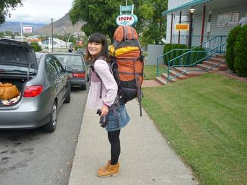
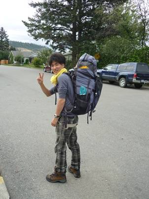
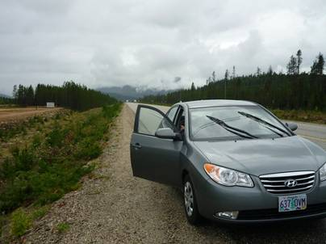
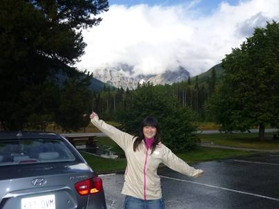
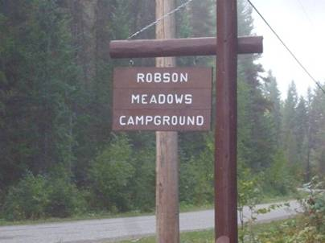

3日目(9/6)～カナディアンロッキーの懐へ～
toMt.RobsonProvincialPark


今日はブリティッシュコロンビア州とアルバータ州の州境に南北に長く連なっているカナディアンロッキーの懐、ロブソン山(Mt.Robson)へと向かう。宿の外で新しいザックとともに記念撮影。

しばらく車を走らせると雨が降ってきた。明日からは登山だというのに、大丈夫だろうか。カムループスはちょうど分岐の町にもなっていて、東のバンフへ向かう道と、僕らの向かうジャスパー方面への道がある。

今日の工程は短い。300km強走り、強の目的地であるロブソン山のふもとにある観光案内所に着いた。出発からしばらく降り続いていた雨はここまで来るとほぼ止んでいた。しかしあたりの地面はまだ濡れているし、ロブソンも雲に隠れてしまっていた。明日晴れることを祈るばかりだ。ここにはお店などは無く、街ではない。どこかにテントを張ろうと思ったが、駐車場にはサイト禁止と書かれていた。日本ではよくやってきた手段なので、戸惑いあたりにキャンプ場はないかと探すことにした。すぐ近くにあるはずのキャンプ場が無いので車で少し走ることにした。

Robson
Meadowsキャンプ場は原始の森の中に点々と作られていた。広場があるという感じではなく、キャンピングカーもとまれるほどの駐車スペースと、その奥にテントを張るスペースがあり、となりのスペースとはかなり距離があるので夜中までおしゃべりしていても迷惑になるということは全く無いだろう。日本のキャンプ場とは全く雰囲気が違っていたので最初はかなり戸惑った。まず、予約をしていない。係りの人はどこにもいないので、勝手にサイトしては起こられるかもしれない。キャンピングカーで来ていた客に話を聞くと、係りの人はそのうち車で来るから、Availableになっているところにサイトするといいということだった。早速テントを立てる。しばらくすると、ちゃんと車にのった係りの人が来てお金を徴収していった。確か一人800円くらいだったような気がする。この日の夕飯は、事前にカムループスのSave on
foodsで購入しておいたサーモンの切り身に魚用のクリームソースをあえたものをまおがおいしく調理してくれた。明日からはいよいよ登山だ。
ここのキャンプ場で驚いたのは広さだけではない。トイレが水洗で、しかも温水の出るシャワールームまであったのだ。利用客は無料。なんという贅沢なキャンプ場だろう。